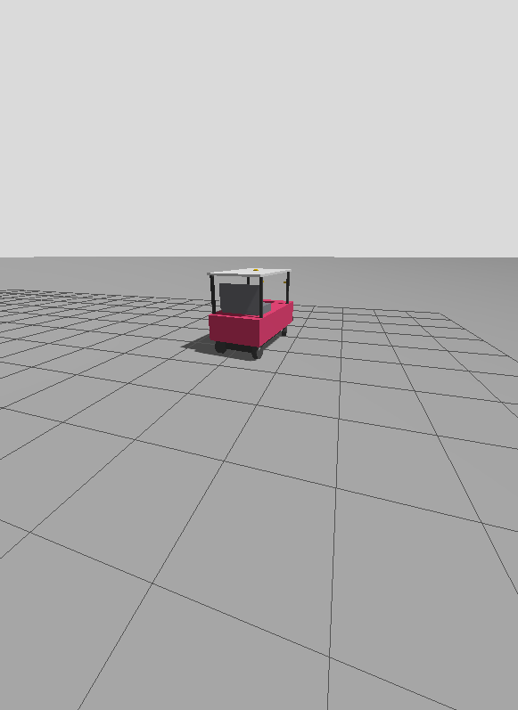

The car's measurements live in one file, src/aav_description/config/vehicle.yaml. Every
other part reads them from there, so a number only ever changes in one place.
| Who reads it | What it takes |
|---|---|
urdf/aav.urdf.xacro, then robot_state_publisher, then /tf_static |
body, wheels, and every sensor's mount (the frames) |
aav_ego (ego.launch.py) |
wheelbase, steering limit |
aav_spine (spine.launch.py) |
wheelbase, track |
aav_legacy (legacy.launch.py) |
wheel diameter, encoder counts per revolution |
aav_navigation (navigation.launch.py) |
footprint (both costmaps), minimum turning radius (SmacPlannerHybrid) |
aav_turtlesim, aav_gazebo |
wheelbase, and in Gazebo the whole model |
aav_description/aav_description/vehicle.py does the derived maths: turning radius =
wheelbase / tan(max steering angle), and the footprint polygon from the body. Its tests
(src/aav_description/test/test_vehicle.py) run without ROS.
Every value is still a guess
Each TODO in vehicle.yaml came from the previous teams' code, with the file and line
cited next to it, or is a guess. Two examples: the wheelbase (1.57 m) comes from a MATLAB
script, and the old code's steering limit varies from 0.45 to 0.55 rad. Measure the car,
replace the number and delete the TODO.
The frames
REP-103 and REP-105 conventions:
- metres and radians;
- x forward, y left, z up;
- angles positive counter-clockwise, so a positive steering angle turns left.
| Frame | Where |
|---|---|
base_link |
On the ground, under the centre of the rear axle. Everything is measured from here. |
chassis |
The body box, from body.length/width/height and rear_overhang |
imu_link, gps_link, radar_link, camera_left_link, camera_right_link |
sensors.<name>.xyz (m) and rpy (rad), relative to base_link |
*_steering_joint, *_wheel_joint |
Front wheels steer about z; all wheels spin about y |
Why it matters:
navsat_transformusesbase_link -> gps_linkto remove the antenna offset from every GPS fix, so measure the antenna itself, not the receiver box.- The EKFs use
imu_linkto rotate IMU readings into the car's frame. If the IMU is mounted turned or upside down, itsrpymust say so, or yaw comes out backwards.
How to measure
- Park on level ground with the wheels straight.
- Mark
base_link: plumb down from the centre of the rear axle and chalk the spot. - Measure each item with a tape:
- wheelbase: rear axle centre to front axle centre;
- track: left wheel centre to right wheel centre;
- wheel diameter: across the tyre, loaded;
- body: bumper to bumper, side to side, ground to the top, and the rear overhang behind the rear axle;
- each sensor: x forward and y left of the chalk mark, z up from the ground.
- Steering limit: turn to full lock and measure the angle of the inside and outside front wheels. The value in the file is the "virtual" centre wheel. A good approximation is atan(wheelbase / R), where R is the turning radius to the middle of the rear axle. Measure R by driving a full circle at full lock at walking pace.
- Mass: use a vehicle scale if you can get to one. Only Gazebo uses it.
Look at it
You need Jazzy installed and the workspace built: see Run it.
ros2 launch aav_description view.launch.pyRViz opens with the car model and every frame's axes (red x forward, green y left, blue z up). Each sensor is an orange box. A slider window moves the steering and wheel joints.
The shapes are only for looking at, and every size comes from vehicle.yaml: a red tub
over the wheels, a cabin with a white roof and a seat, a bumper and headlights at the
front, and a white mark on each wheel so you can see it turn. Physics and Nav2 use only
the collision shapes: the body's outline between the bumpers, and the four wheels.

After editing vehicle.yaml, rebuild and relaunch:
colcon build --packages-select aav_description --symlink-installWith --symlink-install, later edits to vehicle.yaml only need a relaunch.
Two other ways to inspect the model:
- Print the generated URDF:
xacro src/aav_description/urdf/aav.urdf.xacro. - Draw the frame tree as a diagram:
ros2 run rqt_tf_tree rqt_tf_tree.
In Gazebo
aav.gazebo.xacro adds the simulation parts when sim:=true:
- the Ackermann steering system (gz-sim 8);
- IMU and NavSat sensors;
- the joint-state publisher.
Gazebo builds the simulated car from the same vehicle.yaml, so the simulated car turns
like the real one. Its odometry frames are bridged but its TF is not:
robot_localization owns odom -> base_link, exactly as on the car.